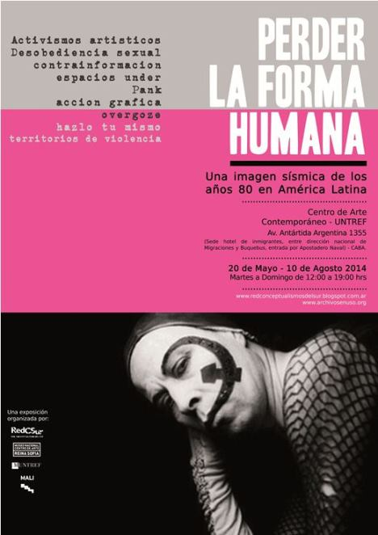
Durante 2013 y 2014 el TiT (Taller de Investigaciones Teatrales), el TiM
(Taller de Investigaciones Musicales), el TiC (Taller de Investigaciones
Cinematográficas) y el Zangandongo tuvieron su espacio en
"Perder la forma humana", exposición organizada por el Museo Nacional
Centro de Arte Reina Sofía (Madrid) en colaboración con el Museo de la
Universidad Nacional de Tres de Febrero (Buenos Aires) y el Museo de Arte de
Lima. Se expuso primero en Madrid, luego en Lima y por
último en Buenos Aires. Según sus organizadores:
"Este proyecto, generado por la Red de Conceptualismos del Sur y
expuesto inicialmente en el Museo Nacional
Centro de Arte Reina Sofía de Madrid, representa la oportunidad de tener
en la Argentina por primera vez una exposición de características inusuales:
reúne 600 piezas que testimonian las tensiones estético políticas y la dinámica
compleja de nuestras sociedades latinoamericanas en los años ochenta. La
muestra, organizada en diferentes micro relatos, recorre las principales problemáticas
de aquellos años en donde las expresiones artísticas se encuentran con las
reivindicaciones por los derechos humanos, la cuestión de género, las nuevas
perspectivas, la emergencia de culturas under, punk, y otras variantes
alternativas."
Con la muestra se editaron una revista y un libro.
|
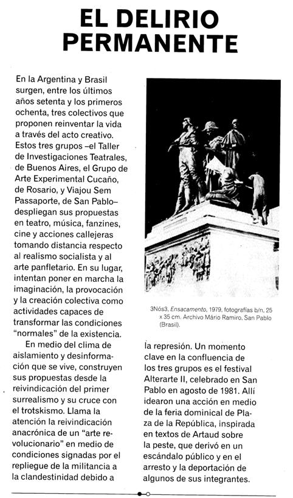
En el rincón TiT-TiM-TiC-Zangandongo había fotos, videos, audio, partituras, afiches de
montajes, ejemplares de folletines y manifiestos, y se mostraba un video
realizado en 2012 por
Roberto Barandalla (Picun, exTiC) y Darío
Schvarzstein, llamado "Un glorioso
fracaso", que narra las últimas acciones del movimiento.
Links para ver la película "Un glorioso
fracaso": Parte
1 - Parte
2
Entrevista
a Picun sobre la realización del video.
A la
izquierda, artículo de la revista editada por los organizadores, que fundamenta
por qué el TiT estaba incluido en la muestra.
|
| 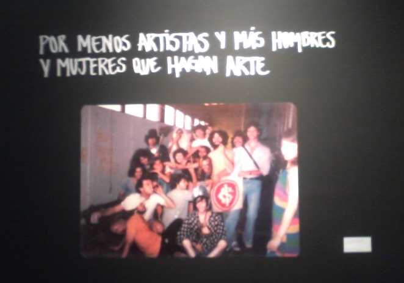
Junto a una de las consignas levantadas con más vehemencia por el
TiT, se
mostró una foto de titeanos y miembros de VSP (Viajou Sem Passaporte) cuando en
San Pablo firmaron el acuerdo
"con la intención de formar un movimiento
latinoamericano por la revolución en el arte".
|
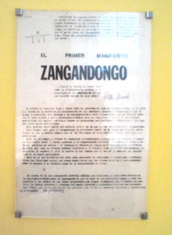 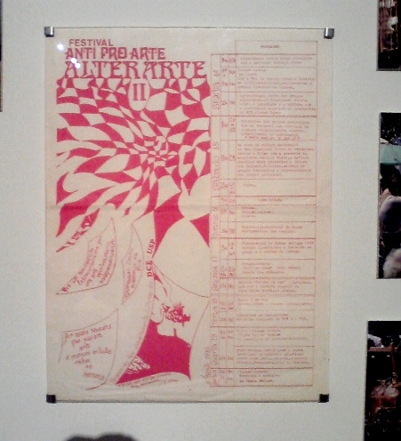 |
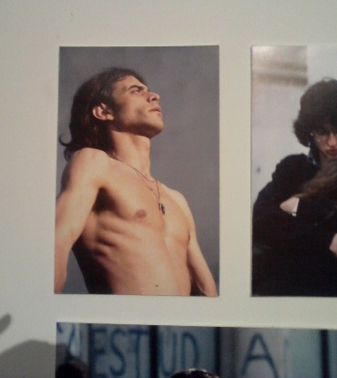
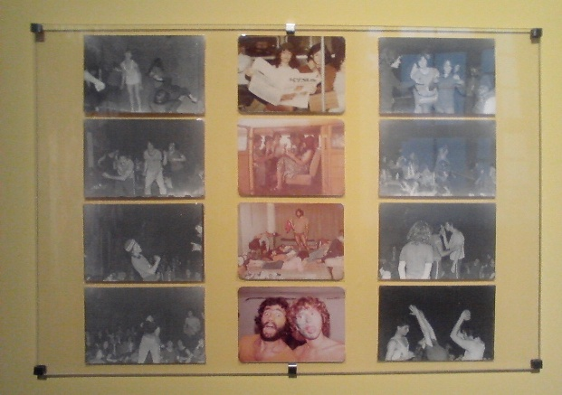
|
|
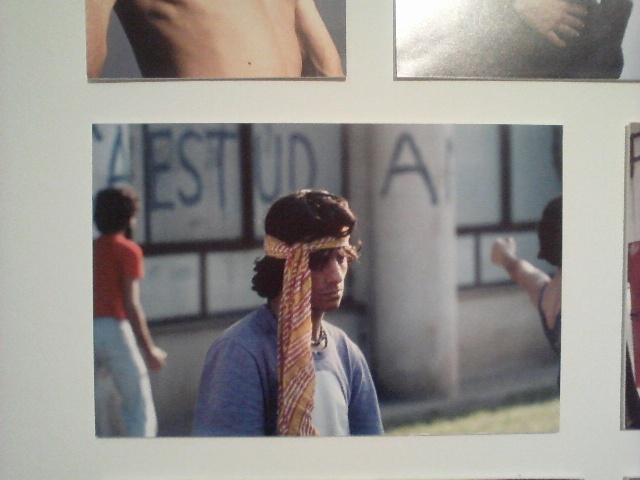 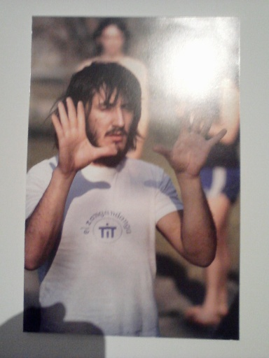 |
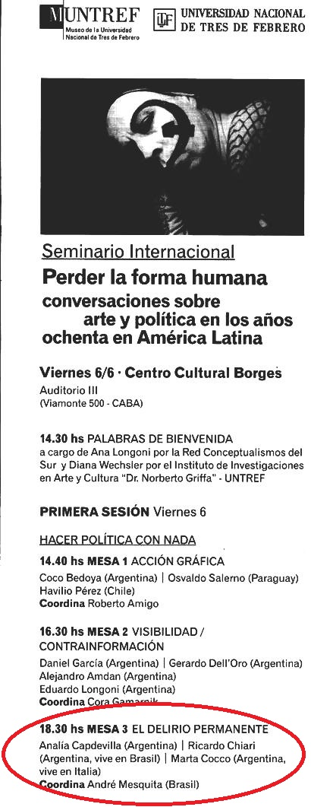
En el marco de la muestra, Marta Cocco (Gali) y Ricardo Chiari del TiT, junto a
Analía Capdevila del grupo Cucaño, fueron panelistas en una charla-debate en el
Centro Cultural Borges
de Buenos Aires el 6 de junio de 2014.
Link al video con fragmentos de la exposición de Marta Cocco
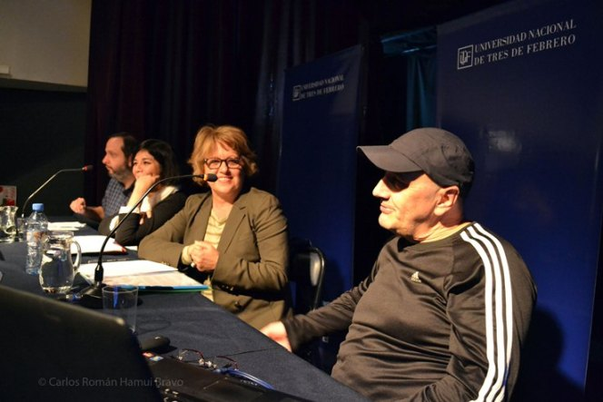
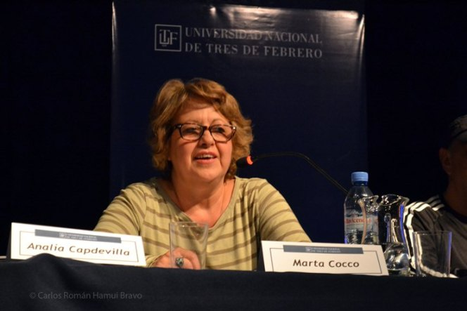
|
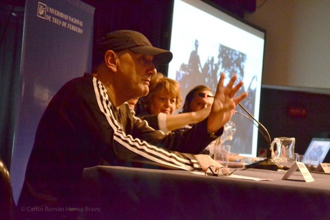
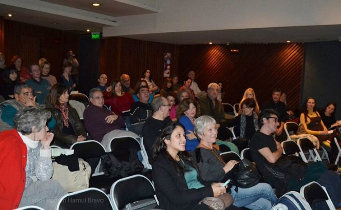 |
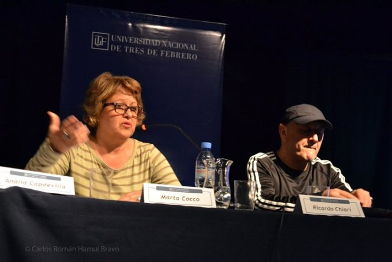
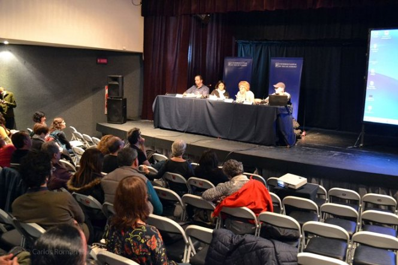 |
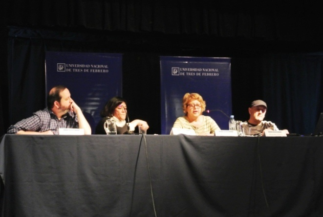
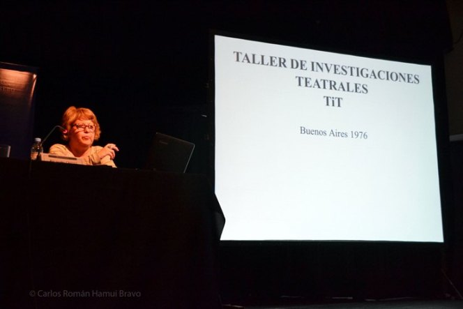 |
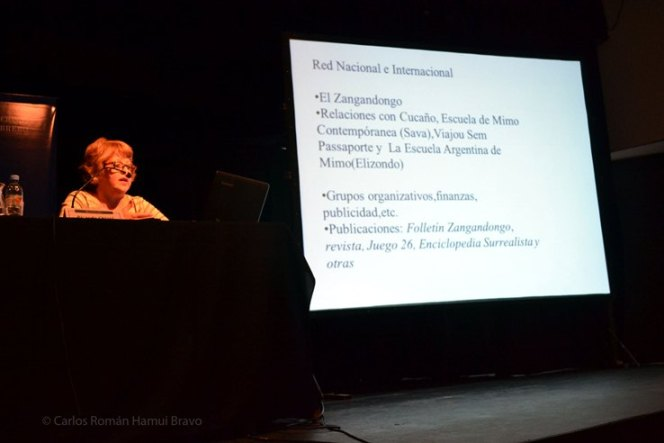
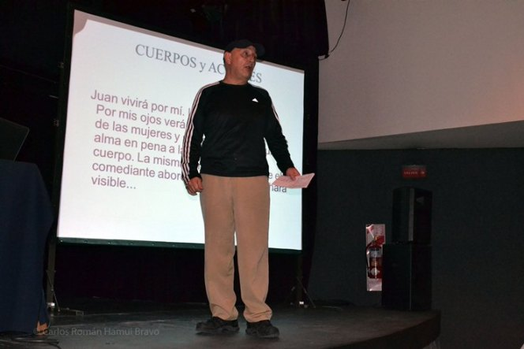 |
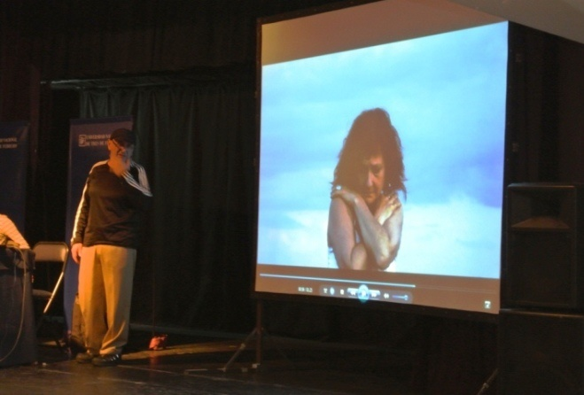
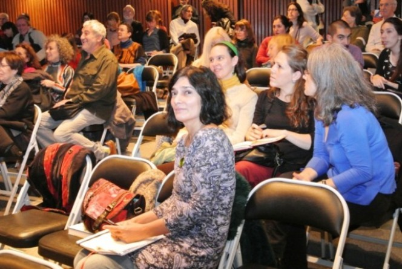 |
|
Esta fue otra oportunidad para que antiguos miembros de los talleres (TiT,
TiM, TiC) se
siguieran reencontrando (fotos de Cthulhu).
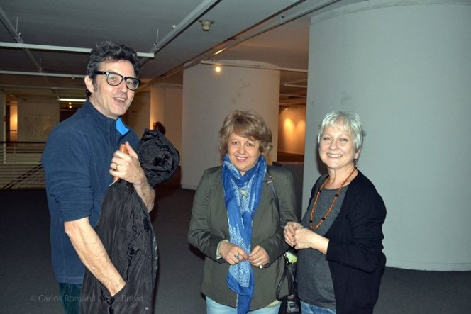
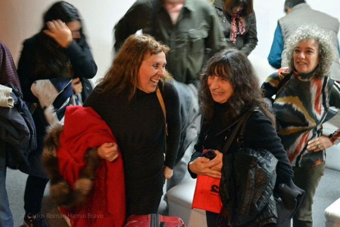 |
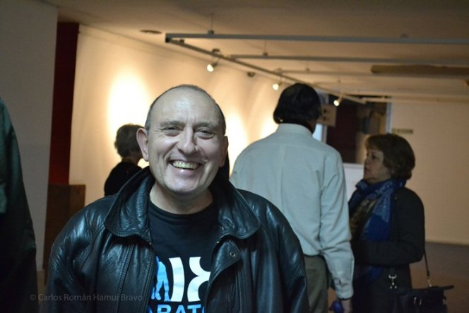
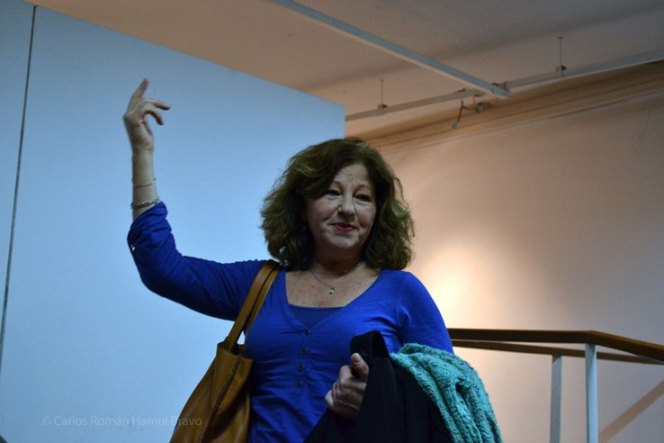 |
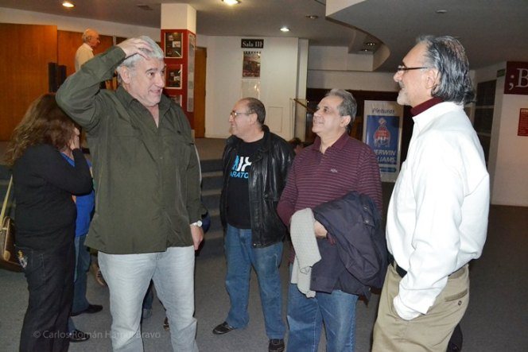
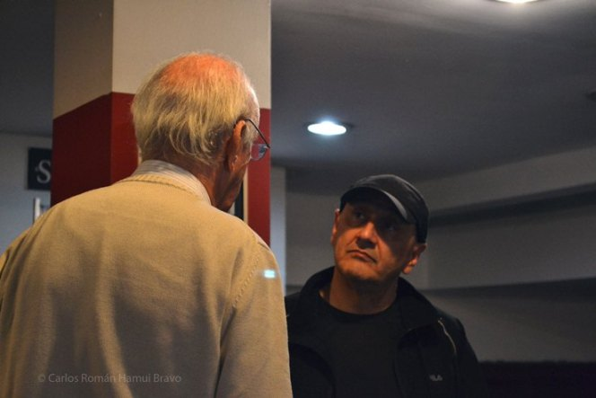 |
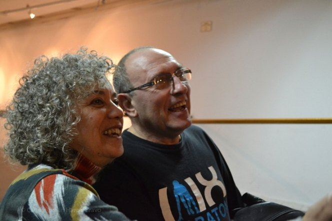 |
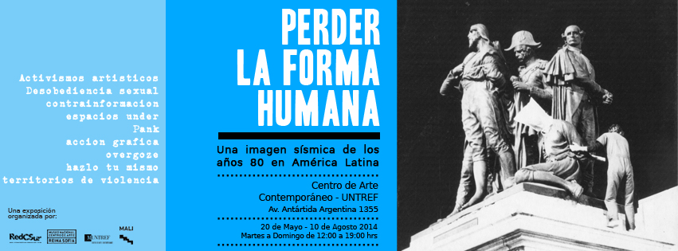 |